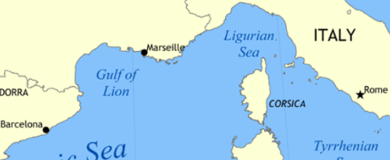
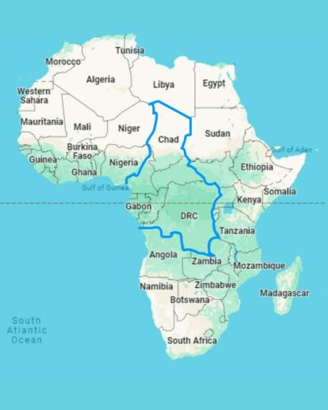
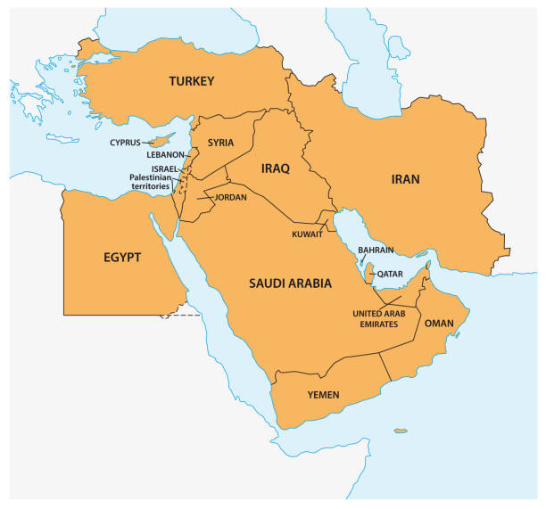
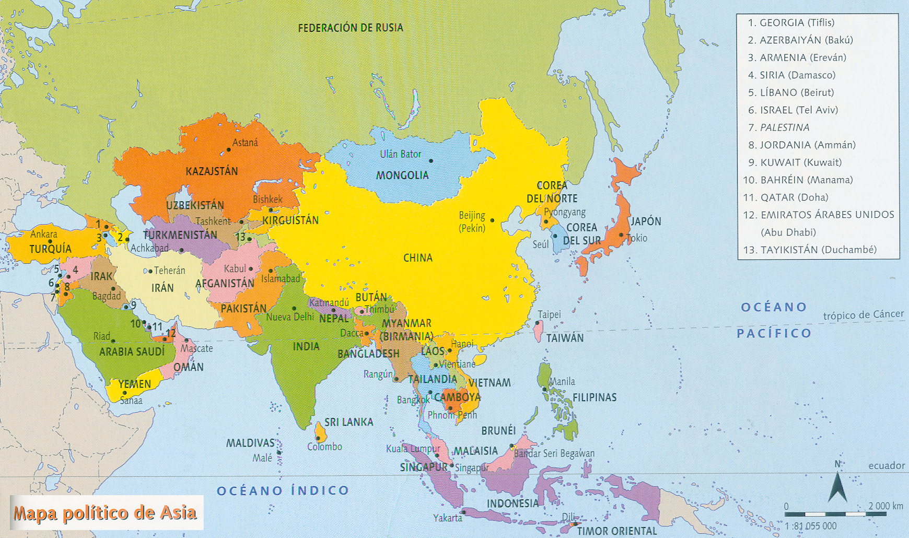
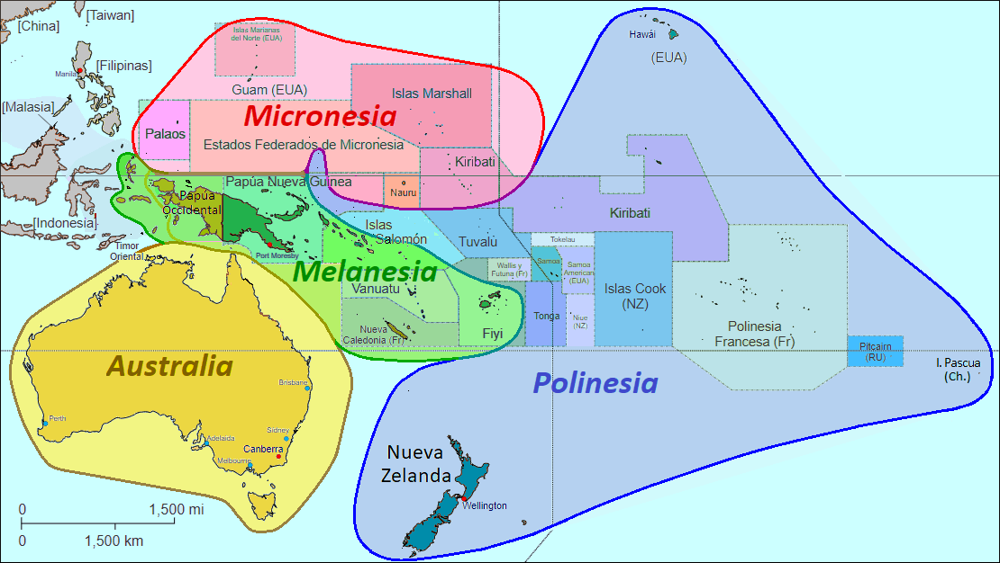
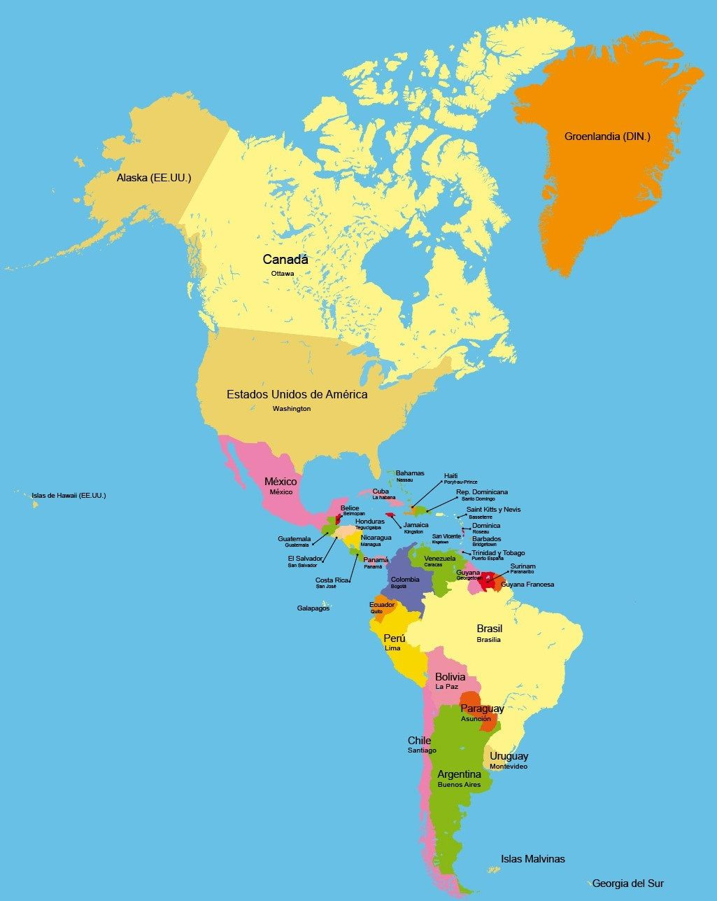

TOP Fechas de la historia:
Catalunya

- 980 d.C Borrell declara la independencia
- 1020 d.C Abad de Oliva crea un precedente resolviendo disputa mediante el derecho, primer registro
escrito de asamblea entre los condes
- 1137 d.C Corona Catalanoaragonesa
- 1174 d.C Desde este momento los reyes del casal de Barcelona, viviran en Aragón
- 1410 Fin de los reyes del casal de Barcelona,el candidato de castilla Fernando de antequera es elegido
sucesor mediante influencia
- 1492 d.C Fin de la Guerra civil catalana y abolición de derechos feudales
- 1659 d.C Firma del tratado de lso Pirineos, perdida de la Catlunya Nord
- 1716 d.C Inicio del fin de la nación catalana
- 1636 d.C Republica de los 3 dias, enfrentamientos armados acaban con el gobierno de Companys
- 1-O de 2017, Referendum de Independencia, exilio y prisión del gobierno catalan
Este de Europa

- 6.000 d.C Primeros asentamientos estables en el este de Europa
- 700 d.C Inicio de la migración eslava hacia el este de Europa
- 780 d.C Formación de la Khan del Rus, primer nucleo urbano ruso en algún lugar """cercano""" a Moscú
- Hacia el 830, los misioneros Cirilo y Metodio son enviados al Este de Europa
- 988 d.C Conversión de la Rus de Kiev al cristianismo
- 1089 Inicio de la consolidación del Reino Unido de Georgia
- 1237 Inicio de la invasión de Gengis Khan sobre Europa
- 1453 Inicio de la expansión Otomana hacia el este de Europa
- 1773 Rebelión de Pugachov en favor de una Ucrania
- 1991 Independencia de todos los paises que formarón parte de la URSS
Africa

- 642 d.C - Conquista musulmana de Egipto, que pasa a formar parte del Califato Rashidún.
- 1652 d.C - Fundación de Ciudad del Cabo por los colonos holandeses de la Compañía Neerlandesa de las Indias Orientales.
- 1807 d.C - Abolición del comercio de esclavos en el Imperio Británico, aunque la esclavitud no fue totalmente abolida hasta 1833.
- 1884 d.C - Conferencia de Berlín: las potencias europeas acuerdan el reparto colonial de África.
- 1905 d.C - Inicio de la revuelta de Maji Maji en el África Oriental Alemana (actual Tanzania), contra el dominio colonial alemán.
- 1956 d.C - Independencia de Marruecos del dominio colonial francés y español.
- 1957 d.C - Ghana se convierte en el primer país del África subsahariana en obtener la independencia del Reino Unido.
- 1994 d.C - Nelson Mandela es elegido presidente de Sudáfrica en las primeras elecciones democráticas multirraciales.
- 1994 d.C - Genocidio de los tutsis en Ruanda, donde murieron alrededor de 800,000 personas en solo 100 días.
- 2002 d.C - Formación oficial de la Unión Africana, en sustitución de la Organización para la Unidad Africana (OUA).
Oriente Medio

- 2330 a.C - 2154 a.C Formación y caida del primer imperio en Oriente Medio (Imperio Acadio)
- 670 a.C - 609 a.C Formación y caida del Imperio Asirio
- 600 a.C - 539 a.C Formación y caida del Imperio Neobabilónico
- 500 a.C - 330 a.C Formación y caida del Imperio Persa
- 250 a.C - 63 a.C Formación y caida del Imperio Seléucida
- 100 a.C - 224 d.C Formación y caida del Imperio Part
- 500 d.C - 651 d.C Formación y caida del Imperio Sasánida
- 800 d.C - 1258 d.C Formación y caida del Imperio Califato Abasí
- 1.600 d.C - 1923 d.C Formación y caida del Imperio Otomano
- 1192 d.C, La Orden de los Hashshin, fundada por Hassan Il Sabad en la antigua Persia asesinan al rey de
las cruzadas
Asia

- 3300 a.C - Nacimiento de la civilización del Valle del Indo, en el actual Pakistán y noroeste de la India.
- 221 a.C - Unificación de China bajo la dinastía Qin, con Qin Shi Huang como primer emperador.
- 105 d.C - Invención del papel en China, atribuida a Cai Lun.
- 1603 d.C - Unificación de Japón bajo el shogunato Tokugawa, marcando el inicio del período Edo.
- 1839 d.C - Inicio de la Primera Guerra del Opio entre China y el Reino Unido; finaliza en 1842 con el Tratado de Nankín, en el que China cede Hong Kong a los británicos.
- 1947 d.C - Independencia de la India del Imperio Británico y partición en dos estados: India y Pakistán.
- 1949 d.C - Fundación de la República Popular China; Taiwán se establece como sede del gobierno nacionalista tras la guerra civil china.
- 1953 d.C - Final de la Guerra de Corea con la firma del armisticio; fracasa la unificación, y la península queda dividida entre Corea del Norte y Corea del Sur.
- 1975 d.C - Fin de la Guerra de Vietnam y unificación del país bajo el gobierno comunista.
Oceania

- 1770 d.C - Llegada de los europeos a Australia, encabezados por James Cook.
- 1791 d.C - Rebelión en la Bahía de las Islas, en las Islas del Mar del Sur (actual Polinesia); primeras resistencias a la colonización europea.
- 1840 d.C - Firma del Tratado de Waitangi; se establece Nueva Zelanda como colonia británica.
- 1874 d.C - Fiyi (Fiji) se convierte en colonia británica, no independencia; la independencia llegará en 1970.
- 1898 d.C - Anexión de Hawái por parte de Estados Unidos.
- 1918 d.C - Australia asume el control de varios territorios del Pacífico, como parte del mandato de la Sociedad de Naciones tras la Primera Guerra Mundial.
- 1919 d.C - Samoa Occidental (actual Samoa) se convierte en mandato de Nueva Zelanda bajo la Liga de Naciones.
- 1941 d.C - Ocupación japonesa de Guam durante la Segunda Guerra Mundial.
- 1975 d.C - Independencia de Papúa Nueva Guinea de Australia.
- 1986 d.C - Acuerdo de Libre Asociación entre Estados Unidos y los Estados Federados de Micronesia.
America

- 1759 d.C. - Batalla de las Llanuras de Abraham; aunque Francia pierde Canadá ante el Reino Unido, se conserva el francés en Quebec.
- 1818 d.C. - Chile garantiza su independencia de España.
- 1867 d.C. - Venta de Alaska a Estados Unidos; fin de la presencia rusa en América del Norte.
- 1884 d.C. - Fin de la Guerra del Pacífico, que enfrentó a Perú y Bolivia contra Chile; Perú pierde parte de su territorio y las relaciones entre Chile y Bolivia quedan limitadas a aspectos diplomáticos y de cooperación regional.
- 1973 d.C. - Derrocamiento del gobierno de Salvador Allende; la Constitución impuesta por Augusto Pinochet (alias "Pinocho") regirá el país durante décadas.
- 1983 d.C. - Surge la Coordinadora Nacional de Estudiantes Secundarios y Universitarios, que se une a las protestas contra el régimen de Pinochet.
- 1989 d.C. - Se produce el "Caracazo" en Venezuela; se estima que hubo hasta 2,000 muertos.
- 1990 d.C. - En Chile se limita el mandato presidencial a 4 años, marcando la transición hacia la democracia.
- 1917 d.C. - México aprueba la Constitución que continúa vigente hasta la actualidad.
- 1992 d.C. - Golpe de Estado fallido de Hugo Chávez en Venezuela; es encarcelado hasta su indulto, lo que eventualmente le permite postularse a la presidencia.